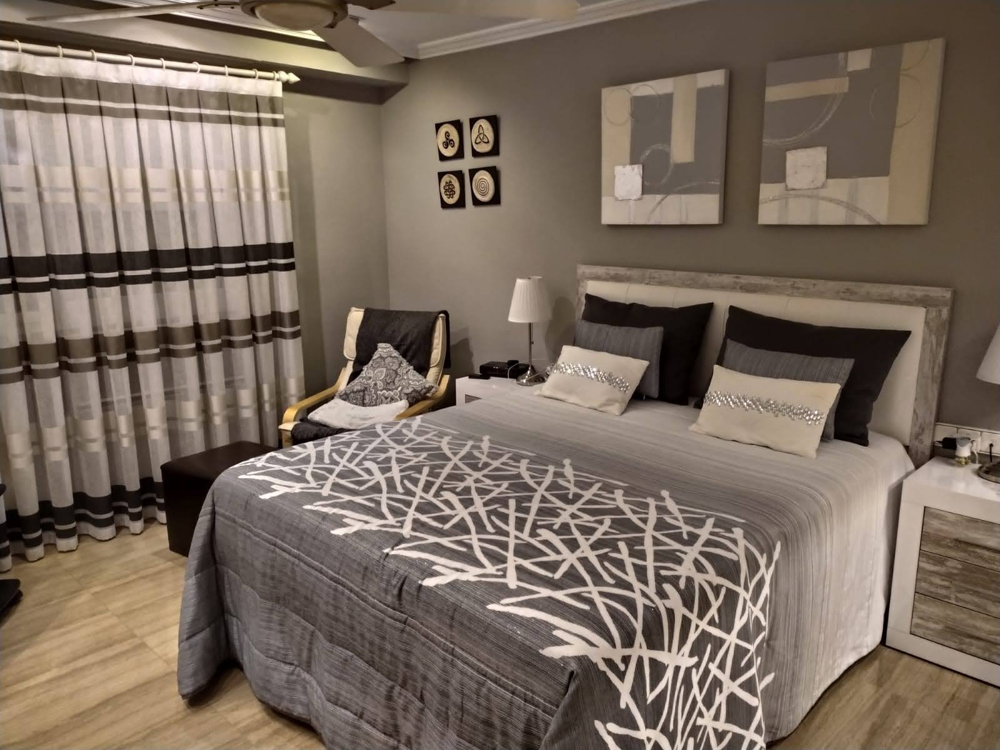
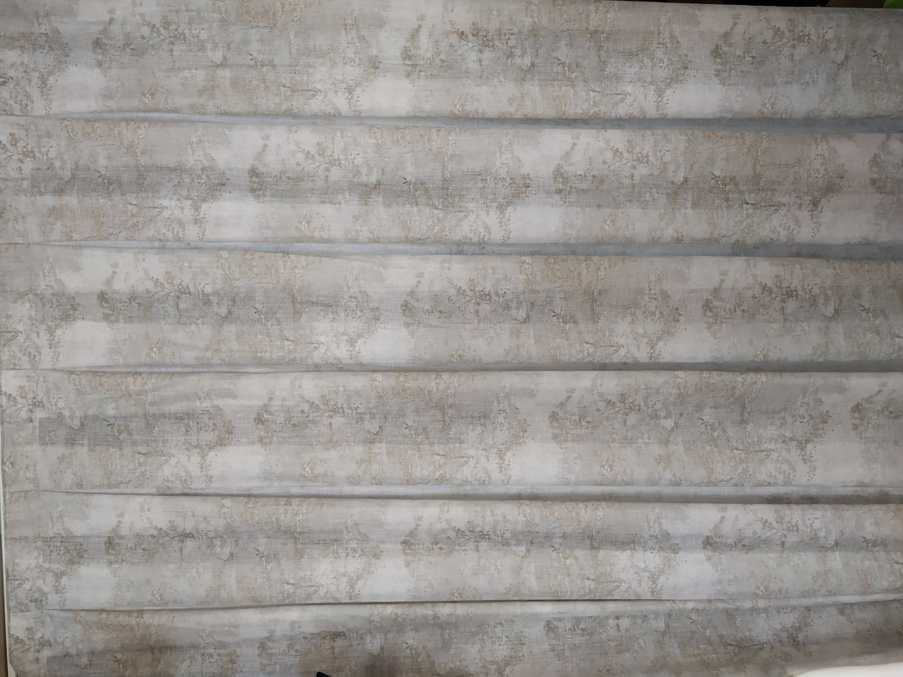
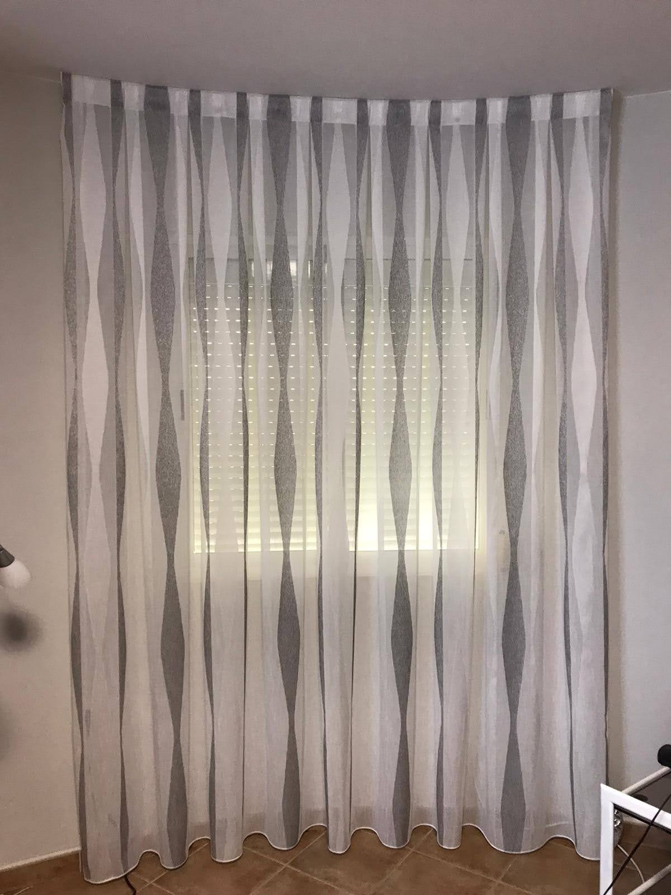

Rieles
Todo tipo de rieles para cortinas ligeras, pesadas o motorizadas.
Que ofrecemos
Los rieles permiten un deslizamiento discreto y suave para visillos, cortinas opacas o sistemas motorizados. Son ideales cuando se busca una instalacion limpia y funcional.
Trabajamos rieles curvos, rectos y de techo, con configuraciones adaptadas a anchuras especiales y recorridos complejos.
Proceso de trabajo
Definimos trazado, puntos de anclaje y tipo de carro para garantizar duracion y comodidad de uso. Ajustamos finales y topes para una apertura estable en todo el recorrido.
Galeria de rieles para cortinas



